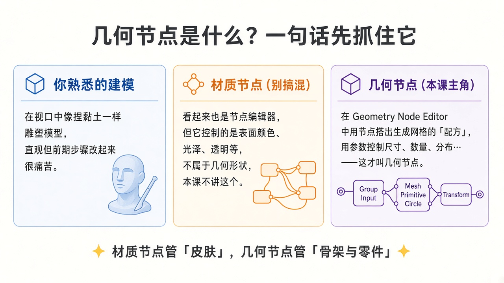
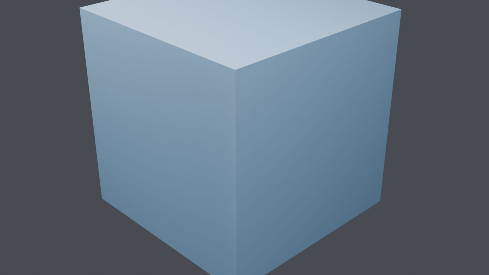
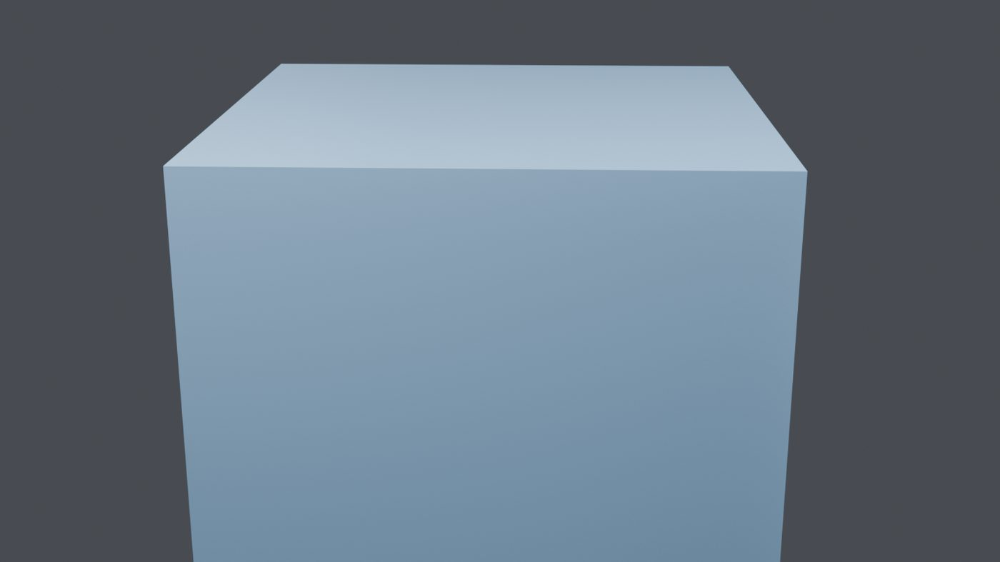
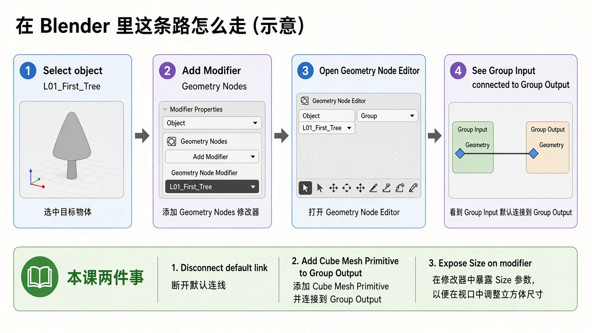
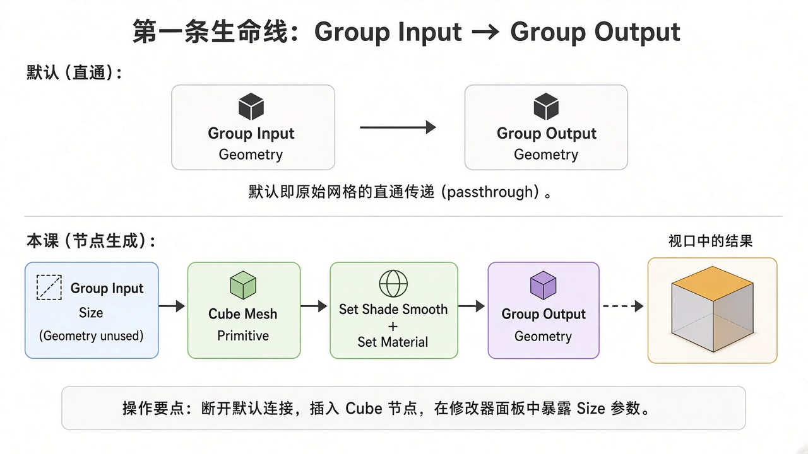

版本说明（重要）
本课是按「几何节点从零开始」标准 重写 的新第 1 课，取代原先偏难的《几何流 vs 场》版本。
旧版课件与案例已归档到
lessons/archive/、blends/archive/、assets/L01/archive_old_hard_lesson/，以后进阶课还会用到其中的思路，但 今天请只学这一版。目标软件：Blender 5.2 LTS（你云电脑上已安装）。节点名一律用 英文官方名，旁边用中文解释。
学完这一课，你应该能自信地说出下面五句话，并且亲手做到：
本课故意不讲： Field（场）的深水区、Instance on Points、Align Rotation、Normalize 等等。那些都很好玩，但会放到后面的课，等你站稳了再上。
你已经会 Blender 的基础操作了——移动视图、加物体、改材质、时间轴拉一拉，这些我们不再从头讲。
但如果你喜欢 动态图形、有趣特效，很快会碰到一种挫败感：
几何节点干的事，可以想成：把「我怎么做这个模型」写成一份可调参数的菜谱。
菜谱改一口盐（一个数值），整道菜重新烧一遍——电脑不嫌烦，你也更自由。
今天我们不急着做大菜。我们只做一件事：
让你亲眼看见：视口里的立方体，可以完全由节点「生成」，而不是你在编辑模式里挤出来的。
这听起来简单，却是后面所有炫技的地基。地基不稳，后面讲 Field、实例、曲线，都会像在听天书。
请先看这张对照卡（浅色概念图）：

用大白话再说一遍：
| 方式 | 你在干什么 | 改早期决定难不难 |
|---|---|---|
| 传统建模 | 在视口里点、挤出、布尔，像捏粘土 | 往往很难，历史一步步叠上去 |
| 材质节点（Shader） | 管「看起来怎样」：颜色、粗糙、透明 | 不管顶点够不够、面怎么长出来 |
| 几何节点 | 管「几何怎样生成 / 变形」 | 改参数就能重算，适合动效与复用 |
记忆口诀：
材质节点管「皮肤」，几何节点管「骨架与零件」。
本课只碰后者。你如果一不小心打开了 Shader Editor，看到彩色的 Principled BSDF，那是隔壁教室——关掉，回到 Geometry Node Editor。
请先下载并打开案例文件：
案例文件：L01_first_geometry_nodes_tree.blend
（若你在课程同步盘里学习，路径也常见为：…/GeometryNodesCourse/blends/L01_first_geometry_nodes_tree.blend）
场景里有一个物体，名字叫 L01_First_Tree。
选中它，看右侧 Modifier Properties（修改器属性）：
拧一下 Size——视口里的立方体变大变小。
恭喜：你已经在「遥控」一条节点树了，哪怕你还没读懂每一个插座。
再看两个渲染参考（就是这个案例在灯光下的样子，截图保持 Blender 原样）：


接下来我们把「这条树到底怎么长出来的」拆开讲。你可以对照案例自学，也可以按下面步骤从空白场景自己搭一遍——两种都有效，我更推荐 至少自己搭一遍，印象会深很多。
下面假设：你会选中物体、切换编辑器类型、打开修改器面板。
凡是 和几何节点有关 的步骤，我都写细一点。
先看一张「路线示意图」：

关键认知： 这个物体像一个「插座」——几何节点修改器要挂在某个物体上才能工作。
在本课案例里，物体叫 L01_First_Tree。它自己的网格几乎不重要，因为我们稍后 不再输出它的原始网格。
（不同 Blender 版本菜单分类可能略有出入，搜索框里输入 Geometry 一般就能找到。）
添加成功后，修改器里通常会出现一个节点组（有的版本会提示 New / 新建）。点 New，给节点组起个好认的名字，比如 L01_First_Tree。
不要选成 Shader Editor，也不要选 Compositor。
如果编辑器一片空白：多半是 没选中带几何节点修改器的物体，或者修改器还没指定节点组——回去检查步骤 B。
新建几何节点组时，你几乎总会看到两个节点：
默认情况下，它们之间有一根线，连的是 Geometry → Geometry。
这句话请慢慢读：
默认连线 = 物体原来长什么样，修改器就算完还输出什么样。
等于你装了一个「什么都没做」的几何节点修改器。它不是坏了，它只是在说：原样通过。
这就是生命线。后面所有花活，都是在这根线中间「插入工序」，或者像本课一样——换一条水源。
请看生命线对照图：

在 Geometry Node Editor 里：
这时候视口里物体可能会 消失（或变成空）。别慌——你只是暂时没有给 Output 任何几何。
就像水管中间断了，下游没水。
官方节点名就是 Cube，类别属于 Mesh Primitive。
视口里应该出现一个立方体。
此刻发生了什么？
它还在物体数据里睡着，只是这条节点树选择「不用它」。
这就是本课最重要的心法转换：
几何节点既可以 改造 原有几何，也可以 完全生成 新几何。
今天我们选第二种，好让你看清：Output 里出来的东西，才是你最终看见的。
案例文件里，Cube 后面还接了：
它们的角色是「化妆」，不是「骨架」。你第一次自己搭时，可以先省略，直接 Cube → Group Output 也完全合格。
现在立方体有了，但最好能在修改器上调大小，而不用每次点进节点里改。
在 Blender 5.2 里，Cube 常用一个统一的 Size；老一点的版本可能是 Size X / Y / Z。
- 若 Group Input 还没有 Size：在节点组接口（Group 面板 / 界面 N 面板的 Group 页）里 新增一个 Float 输入，命名为 Size，设个默认值（比如 2.0）。
- 案例文件已经帮你做好了：接口里有 Geometry（闲置）和 Size（在用）。
参数是从哪冒出来的？
修改器面板上出现的那些输入，来自 节点组接口（Group Interface）里标记为 Input 的插座。
你在接口里暴露什么，修改器就显示什么。
本课只暴露一个 Size，够用了。
打开案例 L01_first_geometry_nodes_tree.blend，节点组名也是 L01_First_Tree。从左到右大致是：
| 节点（英文名） | 中文旁注 | 它在本课的职责 |
|---|---|---|
| Group Input | 组输入 | 提供 Size；Geometry 故意不接线，提醒你「原始网格这次不用」 |
| Cube | 立方体（网格基本体） | 真正「造」出网格的地方 |
| Set Shade Smooth | 设置平滑着色 | 可选；让着色方式明确 |
| Set Material | 设置材质 | 可选；挂上蓝色材质方便观看 |
| Group Output | 组输出 | 生命线终点；只有接到这里的几何才会出现在视口 |
另外还有一个 Frame（框），标签写着本课提醒：用节点造立方体，不走原始网格。框不参与计算，只是注释。
特意没有做的事（请放心）：
那些是后面课程的戏份。
Group Input.Geometry → Group Output.Geometry
物体长什么样，输出还什么样。适合「我要在原有模型上继续加工」的起点。
Cube.Mesh → … → Group Output.Geometry
（Group Input.Geometry 闲置；Size 驱动 Cube）
视口完全由节点生成。适合「从零程序化」的起点，也适合教学：因为结果干净，你不会怀疑「这是不是物体自带的网格」。
以后你常会把两种思路 混用：既吃一点原始几何，又生成新零件，再用 Join Geometry（合并几何） 拼起来。那是后话。
正常。Output 没接到任何 Geometry，下游没东西可显示。把 Cube 的 Mesh 接上 Output 即可。
完全没关系。材质只是为了好看。本课考核的是 树的结构，不是调色。
几何节点生成的网格，在修改器还在时，通常不是你去编辑模式「永久改形」的对象。本课请留在物体模式，拧 Size，观察节点结果。
请务必动手，不要只看：
把 Size 调到 0.5、1.0、3.0，感受「参数 → 重算几何」的即时反馈。
- 删掉或旁路 Cube
- Shift+A → Mesh → Ico Sphere
- 把它的 Mesh 接到通往 Output 的链上
- 试试它的 Radius（半径）、Subdivisions（细分）
做完你会发现：换基本体，只是换「水源」，生命线的逻辑不变。
临时把 Group Input.Geometry 直接连回 Group Output.Geometry（断开 Cube）。
看看视口变成什么——那就是「直通原始网格」。再改回 Cube 方案。
对比一次，比听十句解释都清楚。
第 2 课会继续放慢速度，专门讲：
怎么读节点编辑器 —— 插座颜色、实线、节点上的输入输出、Viewer（查看器）怎么当手电筒用。
仍然不讲 Field 深水；我们先把「看懂一张节点图」练成肌肉记忆。
| 类型 | 路径 |
|---|---|
| 课件 | lessons/L01_first_geometry_nodes_tree.md |
| 案例 | blends/L01_first_geometry_nodes_tree.blend |
| 配图 | assets/L01/（视口 ×2 + 概念图 ×3） |
| 旧版归档 | lessons/archive/、blends/archive/、assets/L01/archive_old_hard_lesson/ |
Google Drive 同步文件夹：课程根目录 GeometryNodesCourse（与云电脑同结构）。
*L01 · 从零认识几何节点 · Blender 5.2 LTS*